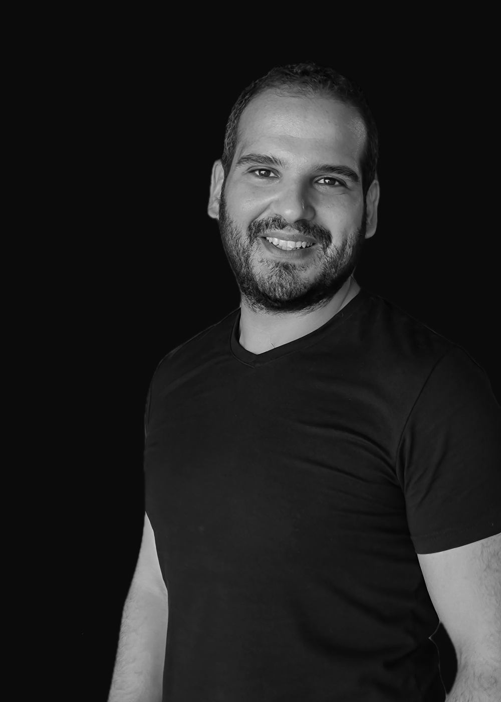

Crafting clarity in worlds of overwhelming data and technical complexity.
Product designer with more than 10 years of experience across banking, government, and enterprise platforms, and a native Arabic speaker. I have led UX for corporate banking products handling real transactions, designed a data-heavy e-government platform for the Executive Council of Dubai, and built design systems that keep multiple products consistent from one source of truth.
Research feeds every decision I make: interviews, personas, journey maps, and usability testing come before screens. I am used to working directly with founders and leadership rather than through layers of process.
How I approach enterprise problems
Guiding tenets refined through years of testing with corporate treasurers, government directors, and data analysts.
Density without Cognitive Strain
Enterprise users don't want empty whitespace when managing 500 bank reconciliations; they want information hierarchy. I design compact, scannable data layouts that maximize throughput while preventing error-prone fatigue.
Deep Domain Immersion
You cannot design an effective FX hedging or process mining interface from a surface-level brief. I spend time learning the regulatory constraints, ledger models, and vocabulary of the practitioners who live in the software every day.
Tokens as Contracts
A design system is only as good as its engineering adoption. I architect design tokens that directly map to production code variables, ensuring mathematical alignment between Figma and React/CSS components.
10-Year Career Journey
A progression of building mission-critical platforms across banking, governance, and SaaS.
Founder & Lead Product Designer
Work directly with client leadership and developers with no layers in between, from strategy to shipped screens. Ran more than 20 user interviews before locking the first version's scope. Built the design system from scratch and documented design standards, cutting handoff time to development by around 30%. Brought AI tools such as Claude and Figma AI into the studio's workflow to speed up iteration and research synthesis.
UX Design Manager
Promoted to lead UX, managing designers across banking, insurance, healthcare, and HR products. Led UX for MyBIAT, a corporate banking solution shipped as web and mobile apps handling real transactions — returning 83% positive user feedback. Deployed a multi-product design system with tokens serving four teams from one source of truth. Redesigned the identity verification and self-enrollment journey, cutting completion time by 43%.
UI Designer, Consultant
Set up the Arabic design system for FIFA+, one system serving multiple platforms, raising production efficiency by about 40%. Delivered more than 79 production-ready pages for the Qatar World Cup on a strict, high-visibility deadline. Ran the Arabic platform build in parallel with the English one, coordinating with more than 25 designers across countries.
Product Designer, Consultant
Designed an e-government platform for the Executive Council of Dubai: data-heavy executive dashboards and reporting tools serving multiple user roles, cutting user error rates by 27%. Built personas and information architecture for the platform's two main segments, cutting design iterations by half. Reached WCAG AA accessibility compliance in a regulated, high-scrutiny government environment.
Product Designer
Designed the end-to-end experience for a SaaS marketplace used by more than 6,000 global brands, replacing an offline process with a digital one. Designed an order management system that lifted online orders by 21% within six months.
UI Designer
Designed and rebranded more than 120 websites for the Italian B2B market with a consistent, scalable UI. Designed a drag-and-drop website builder that helped grow active accounts by 15%.
Skills & Technical Acumen
A balanced synthesis of strategic product thinking, visual precision, and engineering empathy.
Design
- Design Systems & Component Libraries
- Dashboards & Data-Dense Interfaces
- Navigation & Workflow Design
- Onboarding & Verification Flows
- Wireframes & Prototypes
- RTL / BiDi Architecture
Research
- User Interviews & Usability Testing
- Personas & Journey Mapping
- Information Architecture
- Design Documentation & Guidelines
- Accessibility (WCAG AA)
- AI-Assisted Research Synthesis
Tools & Domain
- Figma, Figma AI, Sketch, FigJam, Miro
- Jira, Axure RP
- Claude (research synthesis & docs)
- HTML & CSS (working knowledge)
- Banking & Regulated Financial Products
- E-Government & High-Stakes Reporting